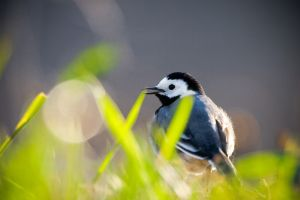

White Wagtail
Constantly wagging tail...
- Scientific Name: Motacilla alba
- Average Length: 16.5–19 cm (6 1⁄2–7 1⁄2 in)
- Average Lifespan: 12 years
- Habitat: Europe, Asia and parts of north Africa
Motacilla alba is basically grey above and white below, with a white face, black cap and black throat. The white wagtail is an insectivorous bird of open country, often near habitation and water. It prefers bare areas for feeding, where it can see and pursue its prey. In urban areas it has adapted to foraging on paved areas such as car parks. It nests in crevices in stone walls and similar natural and man-made structures.